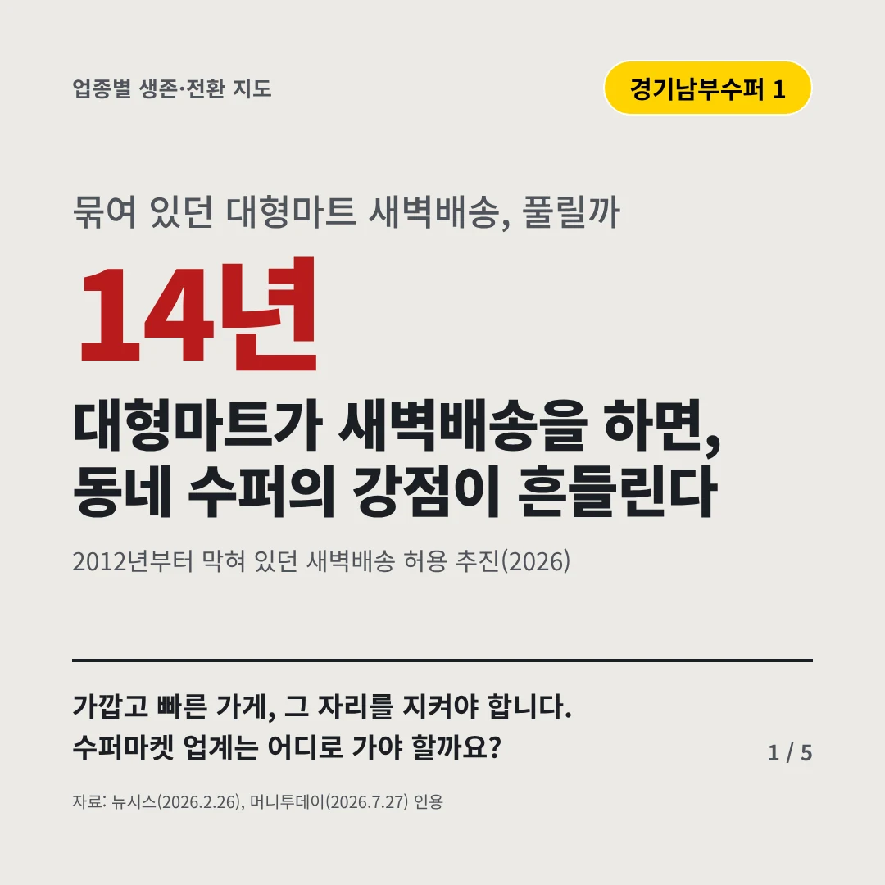
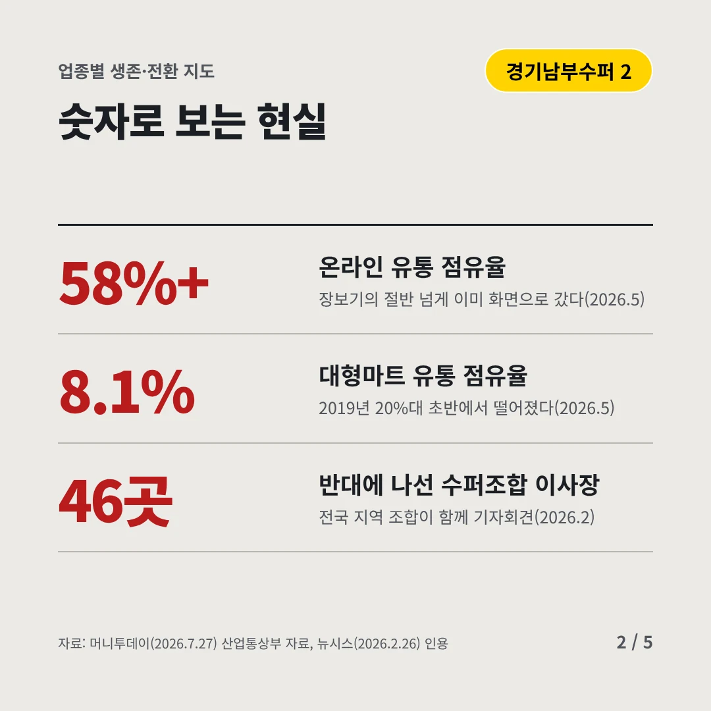
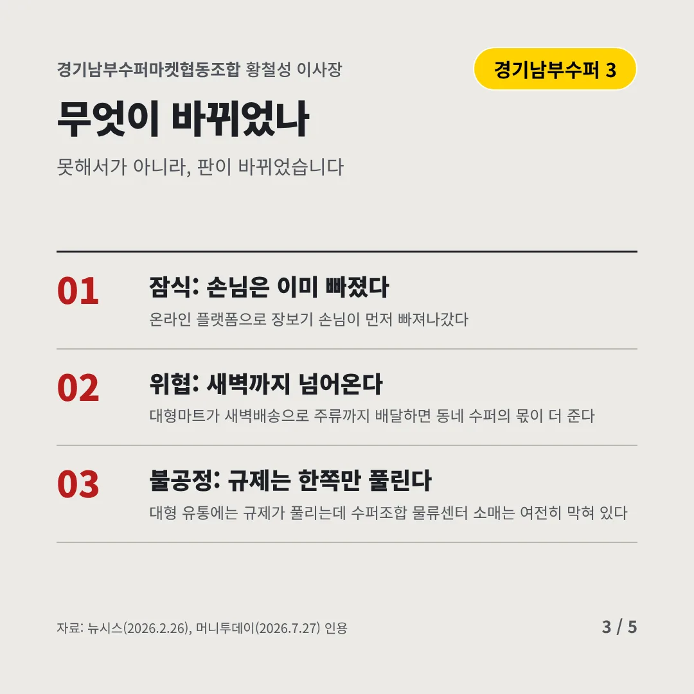
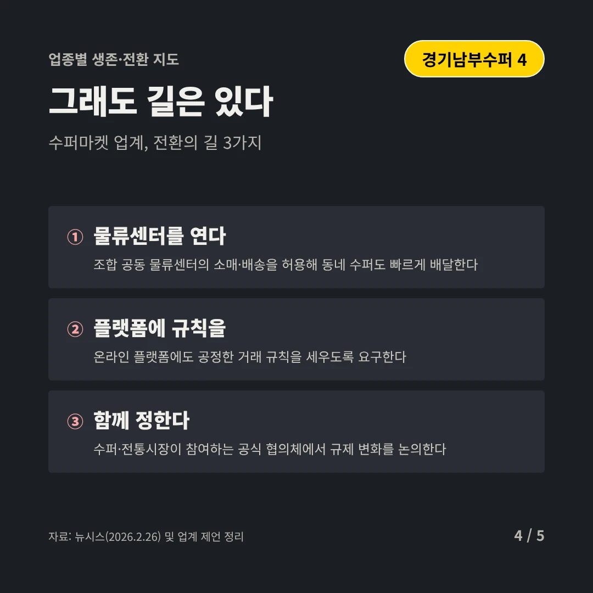
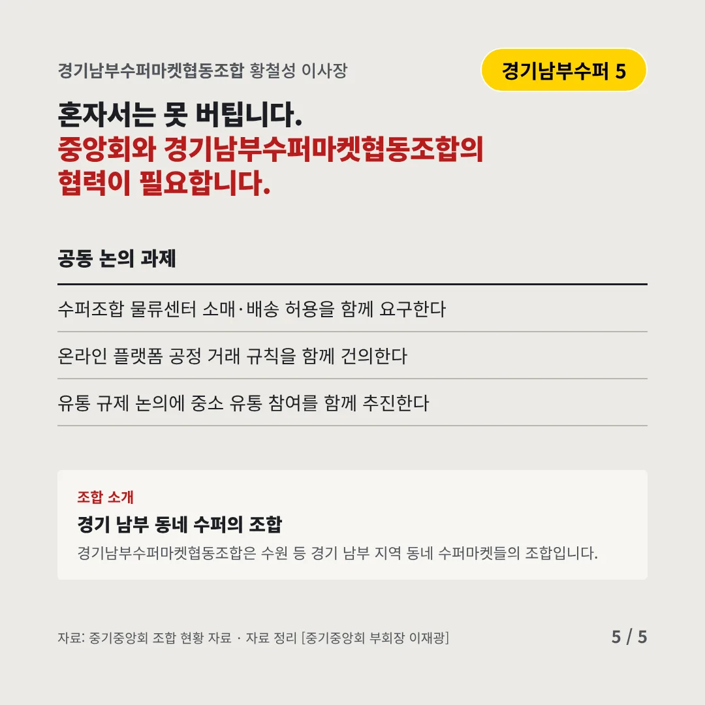
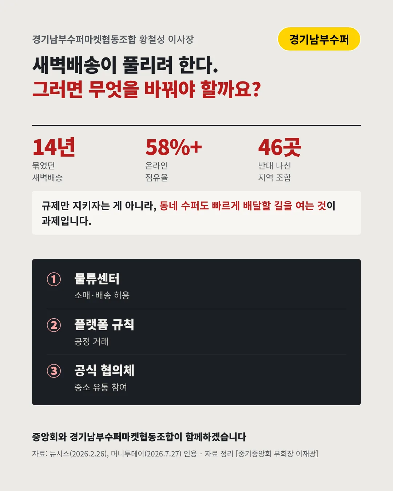

경기남부수퍼마켓협동조합
대형마트가 새벽배송을 하면, 동네 수퍼의 강점이 흔들린다
14년 묶여 있던 대형마트 새벽배송, 풀릴까






가깝고 빠른 가게, 그 자리를 지켜야 합니다. 수퍼마켓 업계는 어디로 가야 할까요?
숫자로 보는 현실
- 58%+온라인 유통 점유율장보기의 절반 넘게 이미 화면으로 갔다(2026.5)
- 8.1%대형마트 유통 점유율2019년 20%대 초반에서 떨어졌다(2026.5)
- 46곳반대에 나선 수퍼조합 이사장전국 지역 조합이 함께 기자회견(2026.2)
무엇이 바뀌었나
- 잠식: 손님은 이미 빠졌다온라인 플랫폼으로 장보기 손님이 먼저 빠져나갔다
- 위협: 새벽까지 넘어온다대형마트가 새벽배송으로 주류까지 배달하면 동네 수퍼의 몫이 더 준다
- 불공정: 규제는 한쪽만 풀린다대형 유통에는 규제가 풀리는데 수퍼조합 물류센터 소매는 여전히 막혀 있다
그래도 길은 있다
- 물류센터를 연다조합 공동 물류센터의 소매·배송을 허용해 동네 수퍼도 빠르게 배달한다
- 플랫폼에 규칙을온라인 플랫폼에도 공정한 거래 규칙을 세우도록 요구한다
- 함께 정한다수퍼·전통시장이 참여하는 공식 협의체에서 규제 변화를 논의한다
한 장 요약

조합 소개
경기남부수퍼마켓협동조합은 수원 등 경기 남부 지역 동네 수퍼마켓들의 조합입니다.
자료: 뉴시스(2026.2.26), 머니투데이(2026.7.27)